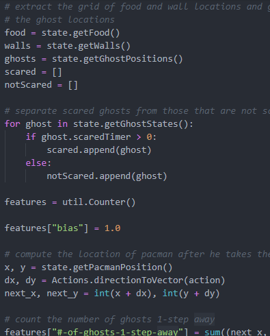

About
 I'm studying Computer Science.
Experience in the following:
> Python
> Java
> HTML/CSS/Javascript
> C
> SQL
I'm always on the hunt for new learning opportunities.
I also completed a 5-week internship where I was tasked to create a chatbot for FAQs. This produced a range of challenges, because not only had I never made a chatbot before, but it also needed to be in both English and Mandarin, accounting for messages that were a mixture of both.
This was an incredibly rewarding experience on the whole. I made some life long connections with people located all around the world, all the way from the UK to New Zealand to South Africa.
Visiting Jiufen, a small town that inspired the setting for the movie 'Spirited Away', experiencing the Wulai natural hot springs (and learning from the locals how to ensure the water was at a good temperature), camping in Alishan and the smelling the aroma wafting from the danbing stall opposite my workplace - I would redo it all again in a heartbeat!